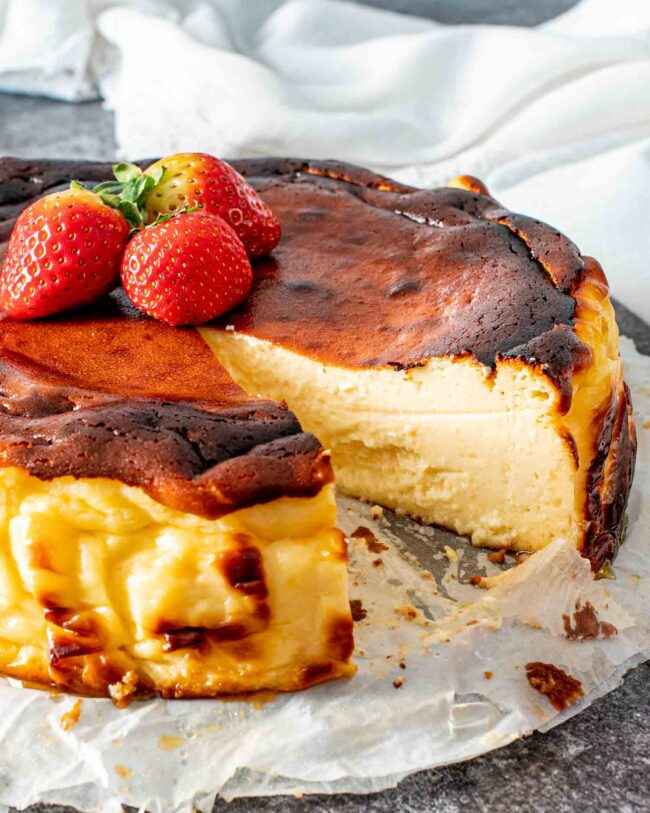

Cheesecake

How to Make Cheesecake
Cheesecake is a classic dessert that is always a crowd-pleaser. Follow these simple steps to make your own delicious cheesecake:
Ingredients
- 1 1/2 cups graham cracker crumbs
- 1/4 cup sugar
- 1/2 cup butter, melted
- 32 ounces cream cheese, softened
- 1 1/4 cups sugar
- 2 teaspoons vanilla extract
- 4 eggs
- 1/3 cup sour cream
Instructions
- Preheat oven to 325°F (160°C). Prepare a 9-inch springform pan by wrapping the bottom with aluminum foil and spraying the inside with nonstick cooking spray.
- In a mixing bowl, combine graham cracker crumbs, sugar, and melted butter. Mix until well combined.
- Press mixture firmly into bottom and up the sides of the prepared pan. Bake for 10 minutes, then remove from oven and set aside to cool.
- In a large mixing bowl, beat cream cheese until smooth. Add sugar and vanilla extract and beat until well combined.
- Add eggs one at a time, beating well after each addition. Stir in sour cream.
- Pour mixture into prepared crust and bake for 60-70 minutes, or until the edges are lightly golden and the center is set.
- Remove from oven and cool on a wire rack for 30 minutes. Run a knife around the edge of the cheesecake to loosen it from the pan. Cool for another 30 minutes.
- Cover cheesecake and refrigerate for at least 4 hours or overnight before serving.